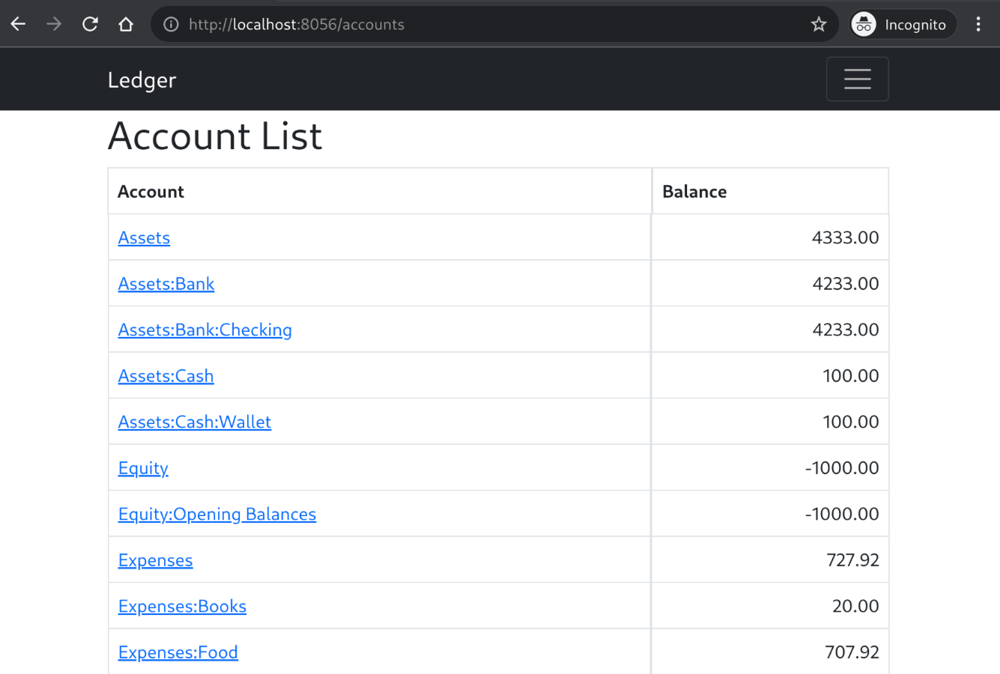
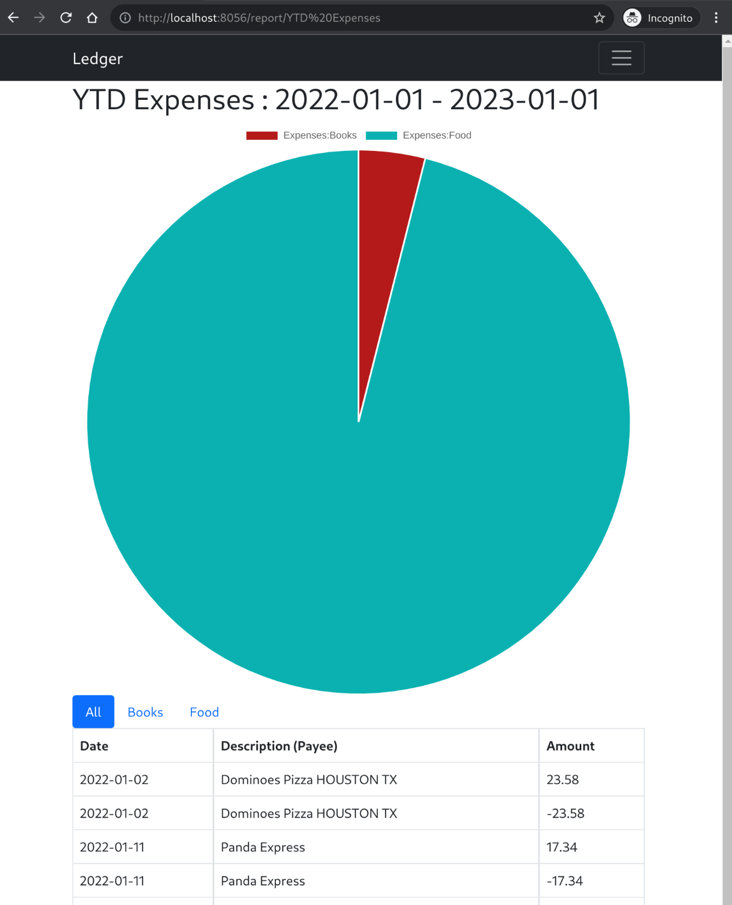
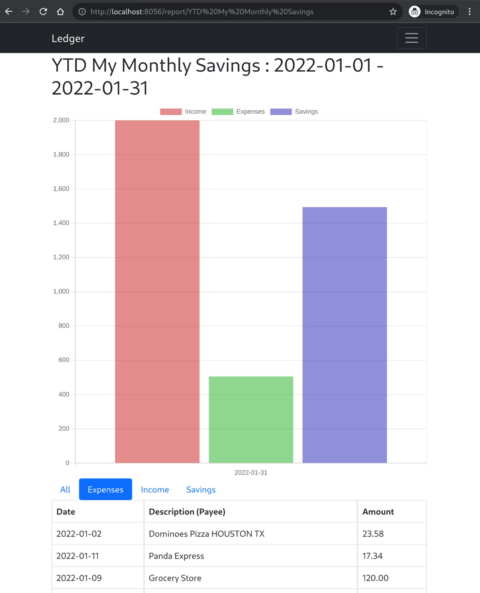
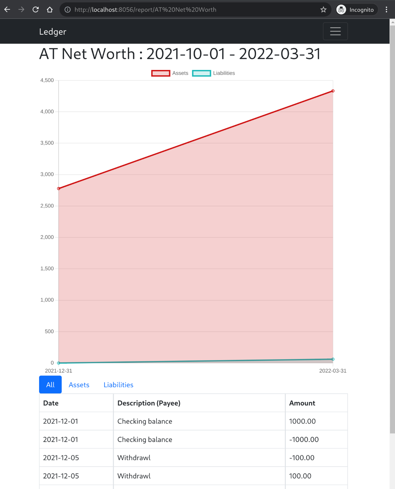

Introduction
Plain Text Accounting is the practice of maintaining an accounting ledger in a format that values human readability, accountant auditability, and future file accessability. The ecosystem of PTA tools includes programs which enable recording of purchases and transfers and investments, and performing analysis to produce registers, balance sheets, profit and loss statements, and lots of other reports.
The core tools of the Plain Text Accounting ecosystem is a workflow familiar to software developers who prefer command line tools, and text based file formats.
This is a guide to plain text accounting in Ledger.
Installation
There are multiple ways to install the Ledger CLI tool. Choose any one of the methods below that best suit your needs.
Pre-compiled binaries
Executable binaries are available for download on the
GitHub Releases page.
Download the binary for your platform (Windows, macOS, or Linux) and extract
the archive.
The archive contains the ledger executable.
To make it easier to run, put the path to the binary into your PATH.
Build from source using Go
To build the ledger executable from source, you will first need to install Go
Follow the instructions on the Go installation page.
ledger currently requires at least Go version 1.17.
Once you have installed Go, the following command can be used to build and install ledger:
go install github.com/howeyc/ledger/ledger@latest
This will automatically download ledger, build it, and install it in Go's global
binary directory (~/go/bin/ by default).
Archlinux AUR
If you happen to be using Archlinux, you can use the port in AUR.
yay -S ledger-go
Ledger File Format
Maintaining your Transaction Record in ledger format.
Tracking your transactions for analysis with ledger is as easy as writing some
text to a file in a very human-readable format.
The format is structured but appears unstructured to many because it doesn't
use curly brackets, key-value pairs, or other special characters to model
transaction data.
Instead, the things that matter are just having enough whitespace between
certain elements in order for the ledger parser to understand the difference
between dates, amounts, and so on.
Start your favorite text editor and you'll get started on the path to personal finance greatness.
Terminology
- Transaction - Series of consecutive lines that represent the move of money from one account to one (or more) other accounts.
- Transaction Date - Date the transaction occured.
- Payee - Description following on the same line as the Date. Usually the place of business or person the transaction occured at/with.
- Posting - Line containing account and (optionally) amount.
Basic transaction format
The basic format of a ledger transaction, shown below.
2017-06-26 Commonplace Coffee
Assets:Cash:Wallet -3.00
Expenses:Restaurants:Coffee 3.00
In the example, line 1 shows the transaction date and payee. Lines 2 and 3 are two postings comprised of an account and an amount.
All transactions must balance. That is, the amount credited must equal the amount debited: credits minus debits must equal zero. In other words, the sum of all postings must equal zero.
A transaction must have at least two postings. There is not limit on the number of postings per transaction.
Note the accounts used in this example.
One begins with Expenses and the other begins with Assets.
Expenses are credited because the money flows toward them.
Assets are credited when you add funds and debited when you move money to
something else.
In this transaction, you're deducting money from an account representing your
wallet and adding it to an expense representing your coffee spending.
ledger has some great conveniences that ease entry.
One such convenience is that ledger allows transactions to omit the amount
on a single posting.
The missing amount is calculated and is equal to whatever amount is necessary
to balance the transaction.
2017-06-26 Commonplace Coffee
Assets:Cash:Wallet
Expenses:Restaurants:Coffee 3.00
You can also supply comments for a transaction or posting. Postings can only have one comment line but transactions can have as many as you want.
; cold brew
; morning
2017-06-26 Commonplace Coffee
Expenses:Restaurants:Coffee 3.00 ; Grande
Assets:Cash:Wallet -3.00
Ledger file
A ledger file is a series of transactions separated by blank lines in between them. Here's an example.
2013/01/02 McDonald's #24233 HOUSTON TX
Expenses:Dining Out:Fast Food 5.60
Assets:Cash:Wallet
2013/01/02 Burger King
Expenses:Dining Out:Fast Food 15.60
Assets:Cash:Wallet
2013/01/02 Purchase 100 IVV
Assets:Bank:Checking -15000
Assets:Investments:IVV
Expenses:Investments:Commissions 4.99
You may be wondering how we track stocks, currencies, commodities, etc. All of those are reporting considerations, transactions are all that's contained in a ledger file. Simplicity of file formats for possible use with other tools is a guiding principle of ledger.
Reporting functions available in ledger are very powerful, and will be introduced in later chapters.
Differences from Other Ledger
The file format supported by this version of ledger is heavily inspired by the format defined by the other ledger. However, this version supports only the most basic of features in the ledger file itself.
No Currencies or Commodities
There is no support for prepending a currency token (such as $) to a number. Nor is there support for appending a token or string to signify a commodity (such as "APPL", "BTC", or "USD").
All amounts must be numbers. Ledger balances and moves amounts (numbers) between accounts in transactions. The significance of what a number means or represents is entirely up to the user.
Note: Even though there is no support for commodities in the ledger file format, support for commidities exists in the web reporting features.
Minimal Command Directive Support
The other ledger supports many Command Directives.
The only supported directives are:
- include - to import/include transactions of another ledger file.
- account - parsed but ignored.
All other directives will cause errors in this application as they will be assumed to be a line starting a transaction.
Transactions are basic
- No metadata support
- No "state" (pending, cleared, ...)
- No virtual postings
- No balance assertions
Postings are account and an optional amount.
Running ledger
Starting ledger provides us with a list of all the commands that are available.
ledger
This produces the following output.
Plain text accounting
Usage:
ledger [command]
Available Commands:
balance Print account balances
completion generate the autocompletion script for the specified shell
equity Print account equity as transaction
help Help about any command
import Import transactions from csv to ledger format
lint Check ledger for errors
print Print transactions in ledger file format
register Print register of transactions
stats A small report of transaction stats
version Version of ledger
web Web service
Flags:
-f, --file string ledger file (default is $LEDGER_FILE) (default "")
-h, --help help for ledger
Use "ledger [command] --help" for more information about a command.
In order to run any command we must specify the ledger file. This is done with either the -f or --file flag. However, since this needs to be included so often, it can also be specified via the environment variable LEDGER_FILE.
It is encouraged to setup this LEDGER_FILE to require less typing every time a command is run.
Accounts
Run ledger -f ledger.dat accounts to see an account list.
Assets
Assets:Bank
Assets:Bank:Checking
Assets:Cash
Assets:Cash:Wallet
Assets:Crypto
Assets:Crypto:BTC
Assets:Crypto:ETH
Equity
Equity:Opening Balances
Expenses
Expenses:Books
Expenses:Food
Expenses:Food:Groceries
Expenses:Food:TakeOut
Income
Income:Salary
Liabilities
Liabilities:MasterCard
Only Leaf (Max Depth) Accounts
If we are only intersted in the highest depth accounts and not interested
in seeing all the parent account levels we can get that, just
run ledger -f ledger.dat accounts -l
Assets:Bank:Checking
Assets:Cash:Wallet
Assets:Crypto:BTC
Assets:Crypto:ETH
Equity:Opening Balances
Expenses:Books
Expenses:Food:Groceries
Expenses:Food:TakeOut
Income:Salary
Liabilities:MasterCard
Matching Depth Accounts
This is mostly useful for autocomplete functions. You can use this to get accounts matching a filter, and at the same depth as the filter.
For instance, let's get all Assets accounts by running
ledger -f ledger.dat accounts -m Assets:
Assets:Bank
Assets:Cash
Assets:Crypto
Balance
Run ledger -f ledger.dat bal to see a balance report.
Assets 4333.00
Assets:Bank 3733.00
Assets:Bank:Checking 3733.00
Assets:Cash 100.00
Assets:Cash:Wallet 100.00
Assets:Crypto 500.00
Assets:Crypto:BTC 300.00
Assets:Crypto:ETH 200.00
Equity -1000.00
Equity:Opening Balances -1000.00
Expenses 727.92
Expenses:Books 20.00
Expenses:Food 707.92
Expenses:Food:Groceries 667.00
Expenses:Food:TakeOut 40.92
Income -4000.00
Income:Salary -4000.00
Liabilities -60.92
Liabilities:MasterCard -60.92
--------------------------------------------------------------------------------
0.00
Net Worth
You can show specific accounts by applying a filter, which is case senstive.
For example, let's get our net worth,
run ledger -f ledger.dat bal Assets Liabilities
Assets 4333.00
Assets:Bank 3733.00
Assets:Bank:Checking 3733.00
Assets:Cash 100.00
Assets:Cash:Wallet 100.00
Assets:Crypto 500.00
Assets:Crypto:BTC 300.00
Assets:Crypto:ETH 200.00
Liabilities -60.92
Liabilities:MasterCard -60.92
--------------------------------------------------------------------------------
4272.08
By Period
We can see our balances segmented by a time period. For example, let's see all
our expenses for each month,
run ledger -f ledger.dat --period Monthly bal Expenses
2021/12/01 - 2021/12/31
================================================================================
Expenses 222.00
Expenses:Food 222.00
Expenses:Food:Groceries 222.00
--------------------------------------------------------------------------------
222.00
================================================================================
2022/01/01 - 2022/01/31
================================================================================
Expenses 505.92
Expenses:Books 20.00
Expenses:Food 485.92
Expenses:Food:Groceries 445.00
Expenses:Food:TakeOut 40.92
--------------------------------------------------------------------------------
505.92
Account Depth
That's a lot of accounts, let's trim it down to see it summed up to the second
level. Run ledger -f ledger.dat --period Monthly --depth 2 bal Expenses
2021/12/01 - 2021/12/31
================================================================================
Expenses 222.00
Expenses:Food 222.00
--------------------------------------------------------------------------------
222.00
================================================================================
2022/01/01 - 2022/01/31
================================================================================
Expenses 505.92
Expenses:Books 20.00
Expenses:Food 485.92
--------------------------------------------------------------------------------
505.92
Equity
Some users like to keep ledger files for each year. To aid in creating a new
starting balance for the next file, we can use the ledger equity command to
generate the required transaction to have the correct starting balances.
Let's start 2021, using all transactions upto the end of 2020. As the end date on the command line is not included, we can use 2021/01/01 as the end date.
Run ledger -f ledger.dat equity -e "2021/01/01"
2021/12/01 Opening Balances
Assets:Bank:Checking 1000.00
Equity:Opening Balances -1000.00
Import
We can import transactions in CSV format, and product ledger transactions. Transactions are classified using best-likely match based on payee descriptions. Matches do not need to be exact matches, it's based on probablility determined by learning from existing transactions. The more existing transactions in your ledger file, the better the matches will be.
Example
Example transactions from your credit card csv download.
Transaction Date,Description,Amount
01/12/22,Dominoes Pizza HOUSTON TX,12.34
01/23/22,Dominoes Pizza PEARLAND TX,14.34
01/02/22,Half Price Books AUSTIN TX,5.24
Let's run our import, making sure to specify the correct date-format to match the CSV file.
Run ledger -f ledger.dat --date-format "01/02/06" import MasterCard transactions.csv
2022/01/12 Dominoes Pizza HOUSTON TX
Expenses:Food:TakeOut 12.34
Liabilities:MasterCard -12.34
2022/01/23 Dominoes Pizza PEARLAND TX
Expenses:Food:TakeOut 14.34
Liabilities:MasterCard -14.34
2022/01/02 Half Price Books AUSTIN TX
Expenses:Books 5.24
Liabilities:MasterCard -5.24
These are not written to our ledger file, just displayed. Once we are satisfied
with the transactions we can write them to our ledger file by
running ledger -f ledger.dat --date-format "01/02/06" import MasterCard transactions.csv >> ledger.dat
You can print your ledger file in a consistent format. Useful if you want all transactions to be in a consistent format and your file to always be ordered by date.
Run ledger -f ledger.dat print
2021/12/01 Checking balance
Assets:Bank:Checking 1000.00
Equity:Opening Balances -1000.00
2021/12/05 Withdrawl
Assets:Bank:Checking -100.00
Assets:Cash:Wallet 100.00
2021/12/22 Grocery Store
Assets:Bank:Checking -222.00
Expenses:Food:Groceries 222.00
2021/12/25 Buy some Crypto
Assets:Bank:Checking -500.00
Assets:Crypto:BTC 300.00
Assets:Crypto:ETH 200.00
2021/12/31 Employer
Assets:Bank:Checking 2000.00
Income:Salary -2000.00
2022/01/02 Dominoes Pizza HOUSTON TX
Expenses:Food:TakeOut 23.58
Liabilities:MasterCard -23.58
2022/01/02 Grocery Store
Assets:Bank:Checking -145.00
Expenses:Food:Groceries 145.00
2022/01/02 Grocery Store
Assets:Bank:Checking -180.00
Expenses:Food:Groceries 180.00
2022/01/08 Half Price Books HOUSTON TX
Expenses:Books 20.00
Liabilities:MasterCard -20.00
2022/01/09 Grocery Store
Assets:Bank:Checking -120.00
Expenses:Food:Groceries 120.00
2022/01/11 Panda Express
Expenses:Food:TakeOut 17.34
Liabilities:MasterCard -17.34
2022/01/15 Employer
Assets:Bank:Checking 2000.00
Income:Salary -2000.00
You can also use this if your splitting off transactions into separate files by date range, or account.
All 2020 transactions for example ledger -f ledger.dat -b "2020/01/01" -e "2021/01/01" print
2021/12/01 Checking balance
Assets:Bank:Checking 1000.00
Equity:Opening Balances -1000.00
Register
Run ledger -f ledger.dat reg to see all transactions in register format.
Since we aren't specifying a specific account, we will get all postings for
all transactions and the running total will sum to zero, as all transactions
balance.
2021/12/01 Checking balanc Assets:Bank:Checking 1000.00 1000.00
2021/12/01 Checking balanc Equity:Opening Balances -1000.00 0.00
2021/12/05 Withdrawl Assets:Bank:Checking -100.00 -100.00
2021/12/05 Withdrawl Assets:Cash:Wallet 100.00 0.00
2021/12/22 Grocery Store Assets:Bank:Checking -222.00 -222.00
2021/12/22 Grocery Store Expenses:Food:Groceries 222.00 0.00
2021/12/25 Buy some Crypto Assets:Bank:Checking -500.00 -500.00
2021/12/25 Buy some Crypto Assets:Crypto:BTC 300.00 -200.00
2021/12/25 Buy some Crypto Assets:Crypto:ETH 200.00 0.00
2021/12/31 Employer Assets:Bank:Checking 2000.00 2000.00
2021/12/31 Employer Income:Salary -2000.00 0.00
2022/01/02 Dominoes Pizza Liabilities:MasterCard -23.58 -23.58
2022/01/02 Dominoes Pizza Expenses:Food:TakeOut 23.58 0.00
2022/01/02 Grocery Store Assets:Bank:Checking -145.00 -145.00
2022/01/02 Grocery Store Expenses:Food:Groceries 145.00 0.00
2022/01/02 Grocery Store Assets:Bank:Checking -180.00 -180.00
2022/01/02 Grocery Store Expenses:Food:Groceries 180.00 0.00
2022/01/08 Half Price Book Liabilities:MasterCard -20.00 -20.00
2022/01/08 Half Price Book Expenses:Books 20.00 0.00
2022/01/09 Grocery Store Assets:Bank:Checking -120.00 -120.00
2022/01/09 Grocery Store Expenses:Food:Groceries 120.00 0.00
2022/01/11 Panda Express Liabilities:MasterCard -17.34 -17.34
2022/01/11 Panda Express Expenses:Food:TakeOut 17.34 0.00
2022/01/15 Employer Assets:Bank:Checking 2000.00 2000.00
2022/01/15 Employer Income:Salary -2000.00 0.00
Payee
Let's see how much money we've spend at the "Grocery Store" each month. Also, to keep from seeing every posting, we are going to specify that we only want to see postings in the "Expenses" accounts. This will allow us to easily see a running total in the last column.
Run ledger -f ledger.dat reg --payee "Grocery Store" --period Monthly Expenses
2021/12/01 - 2021/12/31
================================================================================
2021/12/22 Grocery Store Expenses:Food:Groceries 222.00 222.00
================================================================================
2022/01/01 - 2022/01/31
================================================================================
2022/01/02 Grocery Store Expenses:Food:Groceries 145.00 145.00
2022/01/02 Grocery Store Expenses:Food:Groceries 180.00 325.00
2022/01/09 Grocery Store Expenses:Food:Groceries 120.00 445.00
Accounts
Let's track down all the times we used our Credit Card.
Run ledger -f ledger.dat reg MasterCard
2022/01/02 Dominoes Pizza Liabilities:MasterCard -23.58 -23.58
2022/01/08 Half Price Book Liabilities:MasterCard -20.00 -43.58
2022/01/11 Panda Express Liabilities:MasterCard -17.34 -60.92
Stats
A nice little summary of various ledger stats is avaible.
Run ledger -f ledger.dat stats
Time period : 2021-12-01 to 2022-01-15 (6 weeks 3 days)
Unique payees : 8
Unique accounts : 10
Number of transactions : 12 (0.3 per day)
Number of postings : 25 (0.6 per day)
Time since last post : 12 weeks
Overview
The web service included in ledger allows for the easy and quick viewing
of financial data in a graphical format.
The default pages show the accounts, and a "General Ledger" listing all the transactions.
Start up the web interface with ledger -f ledger.dat web
Open a browser to the default address of http://localhost:8056/
You should see the following.

This lists all the accounts.
Quickview
The main page can be configured to show only a selected subset of all accounts by specifying a quickview configuration file.
Take the following example.
[[account]]
name = "Assets:Bank:Checking"
short_name = "Checking"
[[account]]
name = "Assets:Cash:Wallet"
short_name = "Wallet"
[[account]]
name = "Liabilities:MasterCard"
short_name = "Card"
Run it with ledger -f ledger -q quickview.toml web
The new, more compact start screen should look like the following.

General Ledger
The general ledger page shows all transactions in a table format.

Account page
Click the link to an account shows the register of postings related to that account.

Reports
The web service included in ledger allows for the configuration of many types
of different reports, charts, and calculations.
Lets try an example configuration.
[[report]]
name = "PQ Expenses"
chart = "pie"
date_range = "Previous Quarter"
accounts = [ "Expenses:*" ]
[[report]]
name = "PY Expenses"
chart = "pie"
date_range = "Previous Year"
accounts = [ "Expenses:*" ]
[[report]]
name = "YTD Expenses"
chart = "pie"
date_range = "YTD"
accounts = [ "Expenses:*" ]
[[report]]
name = "YTD My Monthly Savings"
chart = "bar"
date_range = "YTD"
date_freq = "Monthly"
accounts = [ "Income", "Expenses" ]
[[report.calculated_account]]
name = "Savings"
[[report.calculated_account.account_operation]]
name = "Income"
operation = "+"
[[report.calculated_account.account_operation]]
name = "Expenses"
operation = "-"
[[report]]
name = "AT Net Worth"
chart = "line"
date_range = "All Time"
date_freq = "Quarterly"
accounts = [ "Assets", "Liabilities" ]
[[report]]
name = "AT Yearly Income"
chart = "bar"
date_range = "All Time"
date_freq = "Yearly"
accounts = [ "Income" ]
Expenses
This is a pie chart showing the spending per Expense account.

Savings
This report calculates a pseudo account "Savings" based on Income - Expenses over time and shows how much money has been saved per month.

Net Worth
Graph Assets against Liabilities.

Portfolio
The web service included in ledger allows tracking a porfolio of various
holdings. Currently stocks, mutual funds, and crypto currencies are supported.
Basically, you just create a portfolio configuration file where you match your accounts to comodities and the shares of the commodity the account represents.
The example configuration shows what crypto currency holding may look like.
[[portfolio]]
name = "Crypto Holdings"
[[portfolio.stock]]
name = "Bitcoin"
security_type = "Crypto"
section = "Crypto"
ticker = "BTC-USD"
account = "Assets:Crypto:BTC"
shares = 0.009
[[portfolio.stock]]
name = "Etherium"
security_type = "Crypto"
section = "Crypto"
ticker = "ETH-USD"
account = "Assets:Crypto:ETH"
shares = 0.1
Crypto Holdings
Portfolio view of holdings.

Stocks and Mutual Funds
Stock or Mutual Fund Quotes require API keys to services.
# Used for "Stock" security_type -- see https://iexcloud.io/docs/api/
iex_token = "pk_tokenstring"
# Used for "Fund" security_type -- see https://www.alphavantage.co/documentation
av_token = "apikey"
[[portfolio]]
name = "Stock Holdings"
show_dividends = true
[[portfolio.stock]]
name = "S&P 500"
security_type = "Stock"
section = "Holdings"
ticker = "SPY"
account = "Assets:Holdings:SPY"
shares = 200.0
[[portfolio.stock]]
name = "Vanguard Growth"
security_type = "Fund"
section = "Holdings"
ticker = "VASGX"
account = "Assets:Holdings:VASGX"
shares = 23.5
Example File
To make following along and running the commands easier, you can use the transactions below as your ledger.dat file.
2021-12-01 Checking balance
Assets:Bank:Checking 1000.00
Equity:Opening Balances
2021-12-25 Buy some Crypto
Assets:Bank:Checking
Assets:Crypto:BTC 300
Assets:Crypto:ETH 200
2021-12-05 Withdrawl
Assets:Bank:Checking -100.00
Assets:Cash:Wallet
2021-12-31 Employer
Assets:Bank:Checking 2000
Income:Salary
2022-01-15 Employer
Assets:Bank:Checking 2000
Income:Salary
2022-01-02 Dominoes Pizza HOUSTON TX
Liabilities:MasterCard
Expenses:Food:TakeOut 23.58
2021-12-22 Grocery Store
Assets:Bank:Checking
Expenses:Food:Groceries 222.0
2022-01-11 Panda Express
Liabilities:MasterCard
Expenses:Food:TakeOut 17.34
2022-01-09 Grocery Store
Assets:Bank:Checking
Expenses:Food:Groceries 120.0
2022-01-02 Grocery Store
Assets:Bank:Checking
Expenses:Food:Groceries 145.0
2022-01-02 Grocery Store
Assets:Bank:Checking
Expenses:Food:Groceries 180.0
2022-01-08 Half Price Books HOUSTON TX
Liabilities:MasterCard
Expenses:Books 20.0
Editing in Vim
A vim plugin is provided to apply syntax highlighting and account autocomplete when editing. Install the vim-ledger plugin.
Below is the result of :set filetype=ledger in vim.

The plugin can also do folding, try :set foldmethod=syntax

License
© 2022 Chris Howey
This work is licensed under Creative Commons BY-NC-SA 4.0.
To view a copy of this license, visit https://creativecommons.org/licenses/by-nc-sa/4.0.
Your rights under this license
You are free to:
- Share — copy and redistribute the material in any medium or format
- Adapt — remix, transform, and build upon the material
The licensor cannot revoke these freedoms as long as you follow the license terms.
Under the following terms:
- Attribution — You must give appropriate credit, provide a link to the license, and indicate if changes were made. You may do so in any reasonable manner, but not in any way that suggests the licensor endorses you or your use.
- NonCommercial — You may not use the material for commercial purposes.
- ShareAlike — If you remix, transform, or build upon the material, you must distribute your contributions under the same license as the original.
No additional restrictions — You may not apply legal terms or technological measures that legally restrict others from doing anything the license permits.
Notices
You do not have to comply with the license for elements of the material in the public domain or where your use is permitted by an applicable exception or limitation.
No warranties are given. The license may not give you all of the permissions necessary for your intended use. For example, other rights such as publicity, privacy, or moral rights may limit how you use the material.